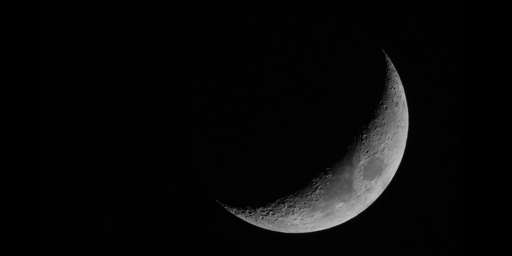
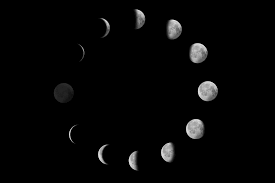
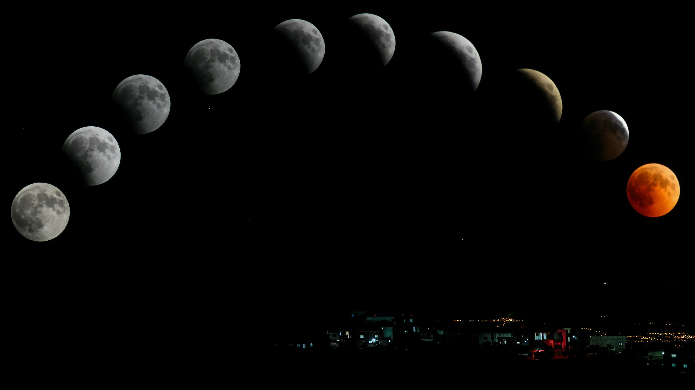

🌙 LUNA 🌙

FOTOS
| Satélite |
Puesta |
Fases |
|  |
 |
 |
VIDEO
| Luna vista desde el espacio |
|
|
--CURIOSIDADES--
La Luna se aleja poco a poco de la Tierra.
La Luna se está encogiendo. .
Siempre da la misma cara a la Tierra.
La Tierra y la Luna intercambian pequeños fragmentos de roca a través de meteoritos.
La Luna está 400 veces más cerca de la Tierra que el Sol.